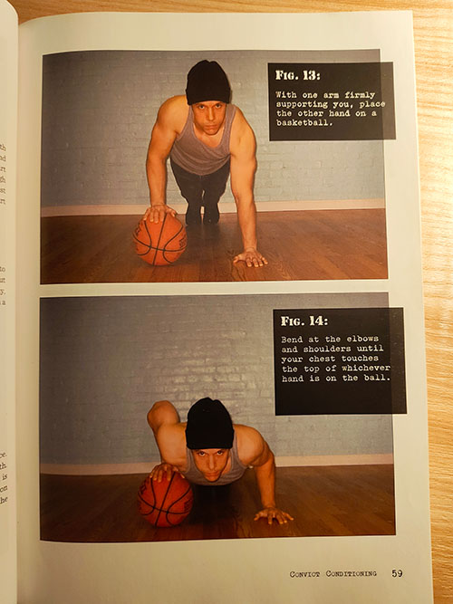
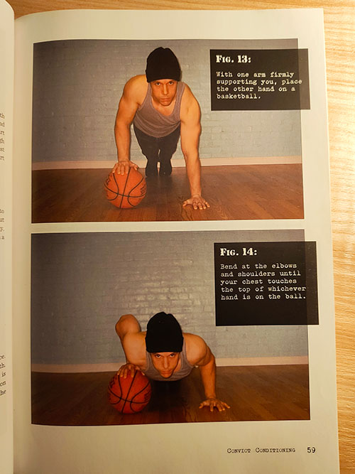

Push-Ups Will Transform Your Upper Body
Learn to scale this gym-class exercise to build your physique, gain powerlifter-level strength, and fortify your health with no weights or equipment.
By Owen Ezell
Opening Salvo
Today, I want to give a shout-out to my favorite exercise of all time: the humble push-up.
You see, I have this crazy idea that this simple little exercise, if practiced diligently and intelligently, can completely transform your body and your life. I also believe that if more people did push-ups, it would completely change the world.
If you’re confused by these claims, I’m not surprised. Push-ups have a reputation for being a mediocre gym-class exercise, the sort of thing you do when you’re stuck in a hotel room with no access to workout equipment. I thought the same thing myself until I discovered the world of progressive calisthenics.
Make Your Push-Ups Progressive
The basic premise of progressive calisthenics is that by manipulating the placement and angles of your limbs, you can make bodyweight exercises as difficult or easy as you want. Push-ups, for instance, can be made easier by doing them on your knees or against an elevated surface. Or they can be made harder by shifting your weight onto a single arm or by elevating your feet.
This means (a) that push-ups offer an appropriate challenge no matter what kind of shape you’re in and (b) that you can gradually make yourself stronger by progressing to harder push-up variations.


 



Hopefully the image above gives you a sense of how this works. These are pictures from the book Convict Conditioning. Published in 2009, Convict Conditioning is sort of like the founding text of progressive calisthenics. It sparked a small but ever-growing movement of athletes who use their own body as a strength-building tool.
That said, many have criticized the exercise progressions found in Convict Conditioning, and in some cases, I think this criticism is valid. The moves with the basketball, for instance, seem particularly hard to pull off.
Luckily, there are other, more intelligent ways to progress your pushups. The site startbodyweight.com, for instance, offers a great set of push-up progressions and does the same with other bodyweight exercises, like pullups and squats, as well.
Yes, Progressive Push-Ups Do Build Muscle
Now the inevitable question: can you really get strong by following these progressions? I mean, c’mon — I get that one-armed push-ups are hard, but how hard are they compared to, say, a heavy bench press?
The answer is: yes, you can get strong with push-ups, and yes, they are hard — as hard as a heavy bench press.
Let’s start with the obvious here. For evidence that progressive calisthenics works, all you have to do is look at calisthenics practitioners. Take a look at Nick Janvier, for instance, creator of that site, startbodyweight.com. Do you have a physique like that? Didn’t think so.
Another, equally impressive example is Matt Schifferle of the Red Delta Project.

Matt has arms bigger than my legs and shoulders so broad that he probably has to walk through doors sideways. And believe it or not, he built his brawn with a basic routine of pushups, dips, pullups, and bodyweight squats and lunges.
And I — in my own, much more modest way — have also gained muscle and strength with the help of pushups.
So yes, push-ups work. They’ve worked for me, they’ve worked for other people, and they will work for you, as long as you keep making progress towards more difficult variants.
Push-Ups vs. the Bench Press
But how do push-ups compare to the bench press? Well, let’s talk numbers first.
Most resources estimate that roughly 70% of the body’s weight is moved through the hands and arms during a push-up. A 180-pound person such as myself would therefore be pushing around 125 pounds during a push-up. That may not seem like a lot to a serious lifter, but remember: advanced calisthenics athletes do push-ups on one hand. For someone who’s 180 pounds, this equates to a respectable 250-pound bench press. And of course, there are always ways to increase the load even more — by elevating your feet, for instance, or by raising one foot off the ground.
So in terms of weight moved, push-ups are actually comparable to the bench press, as long as they are approached progressively. And they also bring a host of other benefits that the bench press simply can’t match.
For one thing, they’re performed face down with no external support from a bench. This means that they require significant activation from your core (specifically your abs, obliques, and glutes) to keep your hips from sagging towards the floor.
And the neat thing is that advanced push-up variations, i.e. those which emphasize a single limb, place more demand on the core muscles than standard push-ups. So by progressing your push-ups, you’ll be progressing your core strength as well as the strength of the pushing muscles in your arms, shoulders, and chest.
Push-ups are also performed with a cocked wrist and a hand flat against the floor. In this position, the joints of the wrist and fingers are extended, which requires activation of the extensor muscles in your hand and on the top of your forearm. This may seem like a minor anatomical detail, but I actually think it matters quite a bit. Many of the objects we handle in the real world — things like doors, cars, and other people — don’t come with nice ergonomic grips. When we push these objects, we have to use our extensor muscles to bend our wrist backwards so we can exert force through our open hand.
So the ability to extend our wrists without injury is actually pretty important for real-world pushing strength. The bench press, unfortunately, doesn’t train this ability much at all, since the object being pushed is a grippable barbell. Gripping things involves hand and finger flexion, not extension, and it utilizes the hand flexors located on the underside of the forearm, which are antagonistic to the hand extensors involved in the push-up.
Now, there’s no doubt that the hand flexion muscles are an important muscle group and that grip is an important physical ability. The issue, though, is that these are already a focus of upper-body pulling motions — exercises like pull-ups, bent-over rows, etc. So as long as you’re practicing a pulling exercise — as you should be if you’re seeking well-balanced strength — you don’t need another grip-dominant exercise like the bench press in your routine.
The #1 Advantage of Push-Ups
Ok, ok — I’m reading your mind. “These are biomechanical nuances,” you’re saying. “I don’t really care if the extensor muscles of my hand are being activated. I just want an easy way to build upper-body muscle and strength.” Well, fine. Biomechanical nuances aside, here’s one more reason to choose push-ups, the most fundamental, incredible, groundbreaking reason of all:
Push-ups require zero equipment.
That’s right: zero. As long as you have about six feet of open floor space, you can load the push muscles of your upper body with hundreds of pounds of resistance.
Meditate on that for a second. You don’t need a gym membership, you don’t need an expensive machine, you don’t need a barbell, dumbbell, kettlebell, or a pull-up bar. All you need to do push-ups is some open floor and two arms. Hell, even one arm will do in a pinch!
Push-Ups Will Change the World
This remarkable accessibility is ultimately why push-ups are my favorite exercise. It’s also why I think push-ups can, and will, change the world. That’s a bold statement, I know. But before you scoff at it, consider push-ups from a cost-to-benefit perspective.
On the costs side, there’s basically nothing. Push-ups are completely free. They require no gym, no driving to and from the gym, no gym equipment, no embarrassment as you pretend to know how to use said gym equipment, no annoyance as you wait to use that gym equipment, no special gym clothes, and no special gym shoes. No one even has to know that you’re doing push-ups. All you need is five minutes, a little floor space, and a bit of effort.
And the benefits? Well, if you practice push-ups diligently and progressively, they will transform your physicality. And I don’t just mean that you’ll gain muscle size and tone. You’ll also gain real, palpable, usable upper-body strength, the benefits of which are incalculable, especially as you get older.
Millions of grandpas would suddenly be able to lift their little grandkids into the air. Millions of grandmas would suddenly be able to carry their own luggage through the airport. Millions of mothers wouldn’t have to call their husbands or sons to help them move the coffee table across the living room. Millions of fathers would lose their “dad bods” and inspire their children with their strength and vigor. And millions of kids would regain that child-like energy and vitality that’s currently being dampened by sedentary screen time.
And while everyone’s busy getting stronger, they’d also be getting healthier. Hearts, lungs, and blood vessels would increase in capacity and ability, preventing millions of cases of cardiovascular disease. The glucose stores found in the muscles themselves would also increase, thereby lowering everyone’s blood sugar and basal insulin levels and ultimately preventing millions of cases of diabetes and obesity. Even people’s bones would get stronger. Resistance training has been shown to increase bone remineralization and bone mineral density, a crucial benefit for older people (especially women) at high risk of osteoporosis.
Resistance Exercise is the Fountain of Youth
If all this sounds amazing, that’s because it is. Exercise — especially resistance exercise — is an amazing medicine, the most holistic, effective medicine we know of actually. In addition to the benefits above, resistance exercise has literally been shown to change gene expression in older adults to resemble that of people in their 20s. This means that on a transcriptional level (i.e. at the level of your DNA and RNA), resistance training literally reverses the process of aging.
Here’s what Dr. Doug McGuff, in his excellent book, Body by Science, says about this:
“Nothing else in human history has shown a functional reversing of age in humans at a molecular level… Now here, after millenia of searching for the “fountain of youth” — anything that might extend life or objectively reverse aging in humans, going back as far as our earliest recorded literature in The Epic of Gilgamesh — a clinical study has essential said, “Look, here it is — an actual functional reversal of aging at the molecular level!” It is astounding that genes that were functioning poorly at an elderly level could be returned to a normal level of functioning in elderly people” (Body by Science, p. 247).
That’s the type of medicine I’m talking about. And yes, I know — these benefits aren’t unique to push-ups. However, push-ups do make these benefits uniquely accessible — accessible to everyone with arms, in fact. Push-ups are the perfect gateway into the world of resistance training, a world you need to familiarize yourself with if you want to improve, or even maintain, your health as you age.
So, whether you’re an out-of-shape couch potato looking to lose some fat, a grandmother looking to stay hale and hearty, a health optimizer looking to stay forever young, or a 20-year-old kid who just wants to look better in a t-shirt — why not give push-ups a try? I’m betting that you’ll be pleased with the results.